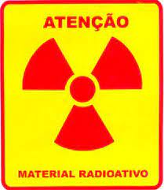

O que são Resíduos Hospitalares?
Lixo hospitalar é, por definição, todo resíduo gerado em instalações de saúde, sejam hospitais, laboratórios, bancos de sangue, consultórios odontológicos e até mesmo clínicas veterinárias, como seringas, fraldas, agulhas, sondas, remédios, luvas, etc.
O que torna esse lixo especial são os microorganismos presentes nos resíduos, que contaminam com sangue, fluidos corporais ou outros materiais infecciosos.
Um único hospital pode produzir mais de 1 tonelada por dia e, como os hospitais são instalações grandes e complexas, acabam descartando boa parte do lixo de maneira descoordenada e sem suporte, e esse descarte incorreto é muito prejudicial para todo meio ambiente, já que os resíduos podem causar todo tipo de doença ao entrar em contato com animais. Por exemplo, se um lixo hospitalar é descartado incorretamente e vai parar em um rio, praticamente qualquer ser que tenha contato com esse rio poderá ser contaminado.
Tipos de lixo hospitalar
Os lixos hospitalares podem ser classificados:
-
Grupo A: Pontencialmente infectantes

Pode infectar as pessoas ao redor caso não seja descartado corretamente, pois podem conter vírus e bactérias ou qualquer outro microorganismo patológico. São exemplos de materiais desse tipo secreções, tecidos, vacinas e ampolas.
-
Grupo B: Resíduos Químicos
Materiais laboratoriais, medicamentos, entre outros são exemplos do Grupo B. Eles possuem propriedades químicas que pode contaminar tanto o ambiente quanto as pessoas.
-
Grupo C: Resíduos Radioativos

Como o nome já diz, são materiais que emitem radiação como , por exemplo, aparelhos antigos de raios-x e radioterapia. Por causa da radiação apresentam bastante perigo.
-
Grupo D: Resíduos Comuns

Lixos gerados nas residências ou empresas também são podem ser provenientes de hospitais como papel, alimentos, ou até luvas, curativos, etc.
-
Grupo E: Resíduos Perfurocortantes
São aqueles que possuem risco de causar lesão em quem ter contato com eles. Exemplificando: agulhas, bisturis, tesouros ou resíduos de vidors.
Forma correta de descarte
Para a correta destinação dos resíduos hospitalares, o CONAMA – Conselho Nacional do Meio Ambiente –, exige, primeiramente, que as pessoas responsáveis por sua separação sejam devidamente treinadas. Depois, o lixo hospitalar é descartado em um saco plástico branco extremamente resistente, (com exceção dos resíduos líquidos, que devem ser armazenados em recipientes constituídos de material compatível, resistentes, rígidos e estanques, com tampa rosqueada e vedante); E tanto os sacos plásticos quanto os recipientes devem ter um adesivo de identificação do tipo de resíduo armazenado. Posteriormente, é feito o transporte dos resíduos por uma empresa especializada. Finalmente, o lixo é enviado para o tratamento adequado, que pode ser por meio de incineração (queimados em altas temperaturas), esterilização por autoclave, ou até mesmo radioesterilização.
Entretanto, o que muitas pessoas não sabem é que uma parte do lixo hospitalar pode sim ser reciclado - cerca de 15,6% -, como as cinzas geradas pela incineração que podem ser usadas para produzir um tipo de tijolo. Porém, mesmo com 15% podendo ser reciclado, das 82 milhões de toneladas de lixo hospitalar produzidas no país, somente 2% foi, de fato, reciclado (cerca de 1 milhão e 600 mil toneladas).
Como dito anteriormente, há também o processo de esterilização por autoclave, em que o lixo é colocado em um recipiente resistente ao calor e submetido a temperaturas elevadas, geralmente acima de 121°C, por um período de tempo específico. Esse ambiente hostil elimina microrganismos patogênicos, incluindo bactérias, vírus e fungos, tornando o lixo hospitalar seguro para descarte, minimizando assim o risco de infecções e protegendo a saúde pública.